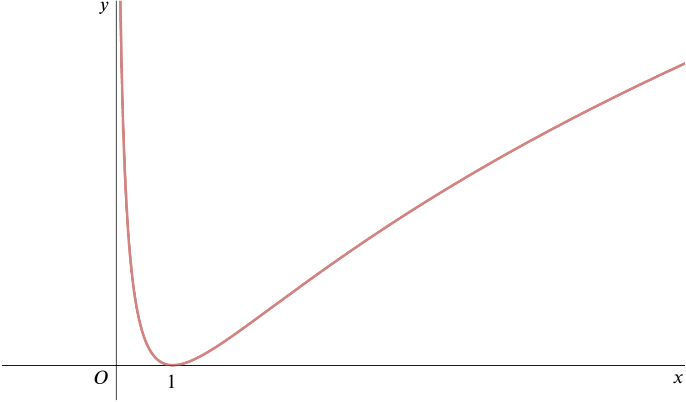
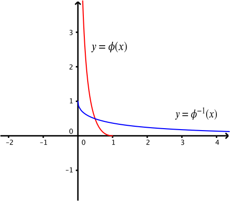

- Give definitions of each of the functions fg and f−1
For fg: composing f and g we find fg(x)=f[g(x)]=ln(1x)=−lnx.
For f−1: rearranging the formula y=lnx to make x the subject we find x=ey, so f−1(x)=ex.
…(a) state a relationship between the graphs of f and fg
Reflection in the x–axis.
…(b) state a relationship between the graphs of f and f−1.
Reflection in the line y=x.

The diagram shows a sketch of the graph y=hf(x). State how the sketch shows that hf is not one–one.
There are horizontal lines that cut the graph twice. In fact, for every positive y-value, there are two x-values that hf maps to the y-value.
… and prove that, if α and β, where 0<α<β, are such that hf(α)=hf(β), then α=g(β).
The composition hf(x)=h(lnx)=(lnx)2.
hf(α)⟹(lnα)2⟹lnα=hf(β)=(lnβ)2=−lnβ.
We must have the minus sign here, since
α≠β. Now we have
lnα⟹α=−lnβ=ln(1β)=1β=g(β).
From the graph we see that if α<β, 0<α<1 and β>1.
- The function ϕ is defined by
ϕ:x↦hf(x),(0<x≤1).
Sketch the graph of ϕ−1, and give an explicit expression in terms of x for ϕ−1(x).
y⟹−y⎯⎯√=(lnx)2=lnx
(since
0<x≤1, we know
lnx is negative) and exponentiating both sides gives
x=e−y√
Switching x and y we find that the inverse of ϕ is ϕ−1(x)=e−x√.
We can find the graph of the inverse of a one-one function by reflecting in the line y=x.
Below are the graphs of both y=ϕ(x) and y=ϕ−1(x).
